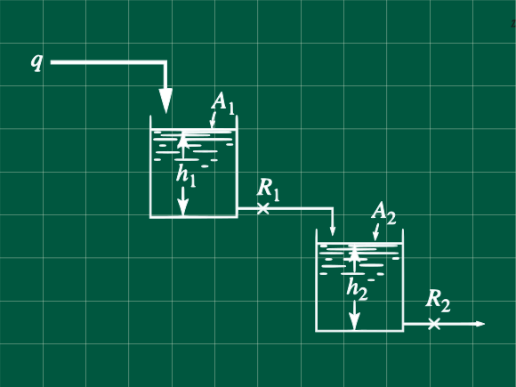

13 Reactores en serie con una respuesta críticamente amortiguada
Problema 7.3 (Process Systems Analysis and Control - Coughanowr, LeBlanc)

El sistema de tanques mostrado en la figura, opera en estado estacionario, cuando un cambio en el caudal tipo paso unitario o heaviside ocurre en el caudal de ingreso del primer tanque. La respuesta de la altura del segundo tanque es críticamente amortiguada, y toma 1 min en el cambio del nivel en llegar al 50 % de su cambio total.
Si la razón de las áreas seccionales es A_1/A_2 = 2 calcular la razón R_1/R_2. Calcule la constante de tiempo para ambos tanques. ¿Cuanto tiempo le toma al primer tanque llegar al 90% de su cambio total?
Resolución
Escribamos las ecuaciones de transferencia de cada tanque. Aquí pondremos directamente las ecuaciones de transferencia, las cuales ya han sido deducidas en los anteriores problemas.
Para el primer tanque tenemos \frac{H_1(s)}{Q(s)}=\frac{R_1}{A_1R_1s+1}\space\space\space\space\textbf{ ... (1)}
Para el segundo tanque
\frac{H_2(s)}{Q_1(s)}=\frac{R_2}{A_2R_2s+1}\space\space\space\space\textbf{ ... (2)}
Pero sabemos que:
Q_1(s) = \frac{H_1(s)}{R_1}
Reemplazando en (2)
\frac{H_2(s)R_1}{H_1(s)}=\frac{R_2}{A_2R_2s+1}\space\space\space\space\textbf{ ... (3)}
Multiplicando (3) y (1)
\frac{H_2(s)}{Q(s)}=\frac{R_2}{(A_2R_2s+1)(A_1R_1s+1)}
haciendo \tau_1 = A_1R_1 y \tau_2=A_2R_2
\frac{H_2(s)}{Q(s)}=\frac{R_2}{(\tau_2s+1)(\tau_1s+1)}\space\space\space\space\textbf{ ... (4)}
Operando para compararlo con un modelo de sistema de segundo orden
\frac{H_2(s)}{Q(s)}=\frac{R_2}{\tau_1\tau_2+(\tau_1+\tau_2)s+1}
Comparando con un sistema de segundo orden
\frac{Y(s)}{X(s)}=\frac{1}{\tau^2 s^2+2\zeta\tau s+1}
\begin{array}{ll} \zeta<1 & \text{Subamortiguado u oscilatorio}\\ \zeta=1 & \text{Críticamente amortiguado}\\ \zeta>1 & \text{Sobreamortiguado o no oscilatorio}\\ \end{array}
Cuando \zeta=1 sabemos que las raices son iguales, es decir para la ecuación (4) las constantes de tiempo son iguales para ambos tanques, pero igual operaremos para demostrarlo.
Comparando los denominadores de las dos anteriores ecuaciones con \zeta=1 tenemos
\tau_1+\tau_2=2\zeta\tau=2\tau\\ \tau^2=\tau_1\tau_2
Operando
(\tau_1-\tau_2)^2=0
De donde se deduce que \tau_1=\tau_2=\tau
Con esta igualda deducimos la relación R_1/R_2
\tau_1=\tau_2\\ A_1R_1=A_2R_2
\frac{A_1}{A_2}=2=\frac{R_2}{R_1}
\mathbf{R_1/R_2=1/2}
Del enunciado, se nos indica que hay un cambio en el caudal de entrada(un cambio tipo escalón unitario), esto es con M como la magnitud del cambio:
Q(s)=\frac{M}{s}
Reemplazando en la ecuación (4) y sabiendo que \tau_1=\tau_2=\tau
H_2(s)=\frac{M}{s}\frac{R_2}{(\tau s+1)^2}\space\space\space\space\textbf{... (5)}
Expandiendo el segundo miembro de la ecuacióne en fracciones parciales (Nota: tambien puede usar tablas para hallar la transformada directamente)
\frac{1}{s(\tau s+1)^2}=\frac{A}{s}+\frac{B}{\tau s+1}+\frac{C}{(\tau s+1)^2}
Operando
1=A(\tau s+1)^2+Bs(\tau s+1)+Cs\space\space\space\space\textbf{... }\mathbf{\alpha}
Seleccionando s apropiadamente
Para s = 0, A =1
Para s=-1/\tau, C=-\tau
Operando \alpha para hallar B
0s^2+0s+1=(B\tau+\tau^2)s^2+(2\tau+B+C)s+1
Comparando los terminos que acompañan a s^2 determinamos que B=-\tau
Reemplazando A, B y C en nuestra ecuación (5) expresada con fracciones parciales.
H_2(s)=MR_2\left(=\frac{1}{s}-\frac{\tau}{\tau s+1}-\frac{\tau}{(\tau s+1)^2}\right)
Aplicando la antitransformada de Laplace y operando
H_2(t) = MR_2\left[1-\left(1+\frac{t}{\tau}\right)e^{-t/\tau}\right]
Para hallar el cambio total hacemos que t\to\infty, hallamos que H_2(t\to\infty)=MR_2
Del enunciado nos indican que para cuando t = 1, el tanque dos alcanza 50% de su cambio total. Reemplazando ese dato tenemos \big[t=1,H(t=1)=0.5MR_2\big]:
0.5\cdot MR_2 = MR_2\left[1-\left(1+\frac{1}{\tau}\right)e^{-1/\tau}\right]
Simplificando
\frac{1}{2}=\left(1-\frac{1}{\tau}\right)e^{-1/\tau}\space\space\space\space\textbf{... }\mathbf{\beta}
Usemos la expansión en series de Taylor truncada de primer orden.
f(x)=f(x_0)+f'(x_0)(x-x_0)
Aplicada a la función f(x)=e^{-x} con x_0=0 se tiene:
e^{-x}=e^{-0}-e^{-0}(x-0)
e^{-x}=1-x
Para -x=-1/\tau
e^{-1/\tau}=1-\frac{1}{\tau}
Reemplazando en el ecuación \beta
\frac{1}{2}=\left(1-\frac{1}{\tau}\right)^2
Despejando y recordando que el \sqrt{x^2}=|x|
\tau=\frac{\sqrt{2}}{\sqrt{2} ± 1}
Obtenemos dos soluciones \begin{array}{ll} \tau_a=0.58578 & \tau_b=3.41421\\ \end{array}
Para escoger un valor de \tau reemplazamos en la ecuación original y aquel que nos dé una aproximación mejor sera escogida
Reemplazando \tau=\tau_a=0.58578 en la ecuación \beta 0.5\approx -0.12826
Para \tau=\tau_b=3.41421 en la ecuación \beta
0.5\approx 0.5276
Entonces nuestra constante de tiempo para ambos tanques es \mathbf{\tau_1=\tau_2=3.41421}
Nota: Si desea una valor exacto de la solución para \tau puede usar métodos númericos como el de Newton-Raphson, pero como incluso las funciones tranferencia son simplemente aproximaciones de un sistema real, no tiene mucho sentido usar valores exactos para la solución de funciones aproximadas, pues estas como sun nombre indica son funciones aproximadas.
Para saber a que tiempo el tanque 1 alcanza 90 % de su cambio total cuando Q(s) = M/s y \tau = A_1R_1 operamos en la ecuación (1)
H_1(s)=\frac{MR_1}{s(\tau s +1)}
H_1(s)=MR_1\left(\frac{1+\tau s - \tau s}{s(\tau s +1)}\right)
H_1(s)=MR_1\left(\frac{1}{s}-\frac{1}{s+1/\tau}\right)
Aplicando la antitransformada
H_1(t)=MR_1\left(1-e^{-t/\tau}\right)
Sabemos que cuando H_1(t\to\infty)=MR_1 corresponde al cambio total. Nos piden hallar t_{90\%} sabiendo que H(t_{90\%})= 0.9MR_1. Reemplazando en la ecuación anterior
0.9MR_1=MR_1\left(1-e^{-t_{90\%}/\tau}\right)
t_{90\%}=\frac{ln(10)}{\tau}
\mathbf{t_{90\%}=0.6744 \textbf{ min}}
Referencias
- Coughanowr, D. R.; LeBlanc, S. E. (2009). Process Systems Analysis and Control (3rd edition). McGraw-Hill. ISBN 978-0-07-339789-4.